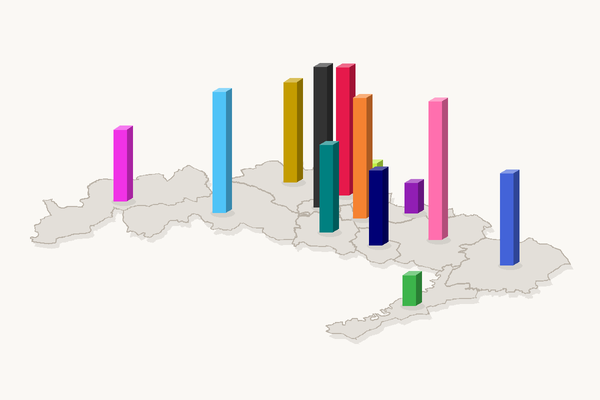
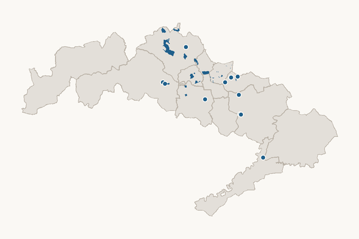
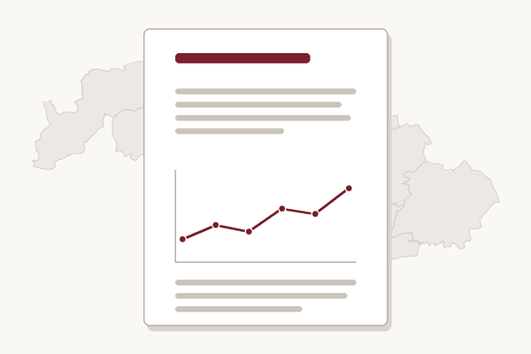

Presentación del proyecto: qué es este sitio, sus objetivos, cómo se ha elaborado y qué contiene cada sección.
Su comentario nos ayuda a mejorar
Puede dejarnos un comentario sobre este sitio: una opinión, una sugerencia de mejora o el aviso de que algún dato publicado en él es erróneo. Dejar un comentario.
Secciones

Arciprestazgos y parroquias
Mapa de los 13 arciprestazgos y las 127 parroquias de la diócesis, con la ficha de cada parroquia: dirección, contacto, extensión y territorio.

Información demográfica
Información demográfica actual del territorio de la diócesis, por arciprestazgos, poblaciones y parroquias: habitantes, edades, origen, estudios y trabajo, hogares y renta.

Previsión de desarrollos urbanísticos
Desarrollos residenciales y promociones de vivienda previstos en el territorio de la diócesis, según fuentes oficiales y de prensa, con las parroquias en las que se sitúan.

Anuario
Datos de los sacramentos y de otros aspectos de la actividad de las parroquias, por parroquias y por arciprestazgos. En preparación.

Estudios
Reflexiones y estudios sociológicos sobre temas concretos, que se irán publicando en esta sección. Estudios publicados: temas de lo más visto en YouTube en España; la autodefinición religiosa en España según el CIS.
Datos nuevos del INE: se incorporarán próximamente
El Instituto Nacional de Estadística ha publicado, o publicará en los próximos días, datos más recientes que los que muestra ahora la sección «Información demográfica» en sus apartados de nacimientos, defunciones, matrimonios y migraciones por municipio:
- Ya publicados (18 de noviembre de 2026): indicadores demográficos básicos de 2025 (tasas de natalidad y nupcialidad, hijos por mujer, edad media a la maternidad, nacidos de madre no casada y edad media al primer matrimonio) y de 2024 (tasa de mortalidad y esperanza de vida), y nacimientos, defunciones y matrimonios de 2025.
- Próximamente (30 de noviembre de 2026): migraciones por municipio de 2025 (llegadas y salidas, desde otros municipios y desde el extranjero).
Para hacer una sola actualización, estos datos se incorporarán todos juntos al sitio web cuando estén disponibles. Hasta entonces, la web sigue mostrando los datos anteriores (2024, y 2023 en mortalidad y esperanza de vida). Los demás datos de la sección (habitantes, edades, origen, estudios y trabajo, hogares y renta) no cambian.